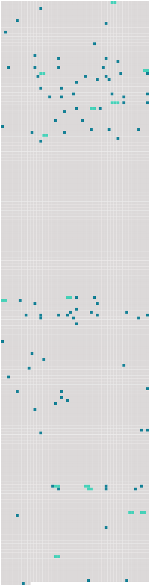

Longueur nb maillons : 104 mentions |
|
Mais dans tous les cas, les pauvres naufragés se confiaient en la Providence, qui ne pouvait pas les abandonner, et leur viendrait certainement en aide. [3 phrases] Roger et [Paul] partirent donc, vers les neuf heures, de l'avant-midi. [5 phrases]
Ce ne fut que vers le soir, que Roger et [Paul] atteignirent le haut de la montagne. [4 phrases]
» répondit [Paul] [6 phrases] Bientôt, Roger et [Paul] s'arrêtèrent, ils avaient atteint le bord de la mer, et c'est là qu'ils voulaient passer la nuit. [6 phrases]
Une Grande Découverte [6 phrases]
Tout à coup, Roger posa la main sur le bras de [Paul] : [1 phrases] — « Ce n'est ni une baleine, ni un requin, dit [Paul] , il n'en existe pas de cette taille.
» [2 phrases]
» [2 phrases] L'eau est si limpide que [tu] pourras suivre tous mes mouvements, et si [tu] vois que je courre un danger, [tu] haleras le câble, et tout sera dit.
» [3 phrases]
» [tu] ne devineras jamais ce que c'est!!
… » [3 phrases] » reprit [Paul] aussi excité que [son] ami, maintenant ; ce bateau sous-marin, dont les aventures extraordinaires ont tant amusé et intrigué notre imagination d'enfant. [1 phrases]
»
» [3 phrases] À quoi [te] sert -il donc d'être mécanicien, s'il faut que je [te] prête des idées comme celles -ci, qui sont absolument de [ton] domaine, il me semble.
» [2 phrases]
Roger, qui avait une imagination romanesque, et paraissait parfois bien extravagante à [son placide ami] , [lui] dit tout à coup : [2 phrases]
» [2 phrases]
» [2 phrases] demanda [Paul] d'un air sérieux. [3 phrases]
»
» [2 phrases]
Tous connaissaient l'histoire du « Nautilus » et du capitaine Nemo, et au grand étonnement de [Paul] , lorsque Roger, sans beaucoup de préambules, proposa son plan de ville sous-marine, il ne rencontra pas l'opposition qu' [il] avait redoutée. [128 phrases]
Après s'être informé de sa santé, il l'accompagna dans la salle à manger, où se trouvait déjà [Paul Lamontagne] , [qui] sifflotait joyeusement, en attendant [son] ami, auprès d'une cage dans laquelle un magnifique canari égrenait des trilles savantes.
Roger présenta [son ami] au curé, qui [lui] fit aussitôt cette remarque en souriant :
» [1 phrases] On prolongea le déjeuner, qui fut des plus joyeux — on n'avait pas l'avantage d'un nouvel hôte souvent à Némoville — et le curé plut à Roger et à [Paul] par son esprit autant que par sa bonté, dont il donna bientôt des preuves. [1 phrases] Il avait appris, au cours de la conversation, que [Paul] était le secrétaire du gouverneur et [l'] en félicita. [1 phrases] — « [Il] aurait dû être le gouverneur, car dans le renflouage du « Nautilus », [Paul] a risqué vingt fois [sa] vie.
»
» [3 phrases]
» [12 phrases] L'abbé Bernard, accompagné de [Paul] et de Roger, fit la visite de sa nouvelle paroisse, et fut accueilli partout avec des démonstrations de la plus vive joie. [11 phrases] Un jour que Roger et [Paul] étaient allés à terre, ils virent un homme assis sur un rocher, et qui examinait le « Nautilus » avec attention. [1 phrases]
» [3 phrases] — « Un vrai nom de chez nous, riposta [Paul] , un nom tout à fait comme il faut, dans une ville sous les eaux. [Je] m'appelle Lamontagne, ne trouvez -vous pas que c'est un peu gênant, pour habiter dans un sous-marin?? [6 phrases]
Il était au centre de la ville et il semblait aussi grand que le « Nautilus », mais comme ni Roger ni [Paul] n'avait proposé de le visiter, le prêtre n'osa pas le demander. [11 phrases]
Le curé consentit avec plaisir, et ils partirent tous trois, car [Paul] était de la partie ; [il] ne quittait Roger que rarement.
Ce fut vraiment une pêche miraculeuse, et [Paul] soutint que c'était le curé qui leur portait chance. [3 phrases]
Roger et [Paul] furent donc assez surpris, au retour de cette pêche miraculeuse, de voir le chien se dresser sur le bord de l'embarcation et pousser un hurlement prolongé. [1 phrases]
» [2 phrases]
» dit [Paul] , en désignant une forme vague, qui flottait à quelque distance. [2 phrases] — « Un canot vide, dit [Paul] , remorquons -le jusqu'à Némoville. [12 phrases]
Et [Paul] , [qui] était présent, fut seul à deviner le secret de l'orpheline. [Il] murmura tout bas : « Pauvre fille!! [32 phrases]
Lorsque Roger reprit le chemin du « Nautilus, » il était distrait et préoccupé, ce qui n'était pas dans ses habitudes ; en entrant chez lui, il rencontra [Paul] [à qui] il dit d'où il venait, et [celui -ci] lui répondit :
» demanda Roger, en s'arrêtant devant [son ami]
» [17 phrases]
[Paul Lamontagne] avait, [lui aussi] , des accès de tristesse dont [il] était seul à connaître le secret. [9 phrases]
Vers dix heures, Roger dit à l'abbé : [22 phrases] Le gouverneur et [son secrétaire] ayant pris place aux bancs armoriés qu'on avait préparés pour eux, une main habile joua les premiers accords d'un chant de Noël. [16 phrases]
« Il est né le divin Enfant », à la messe de minuit, ç'avait été au tour de [Paul] de se sentir remué par la voix de la chanteuse, car [il] avait reconnu celle de Jeanne, la fille du docteur de Chantal, qu' [il] aimait. |
 |
Il est possible de télécharger la ressource sur la page Ortolang |
Si vous avez des questions ou vous voyez des erreurs, merci d'envoyer un mail à silvia.federzoni89@gmail.com |